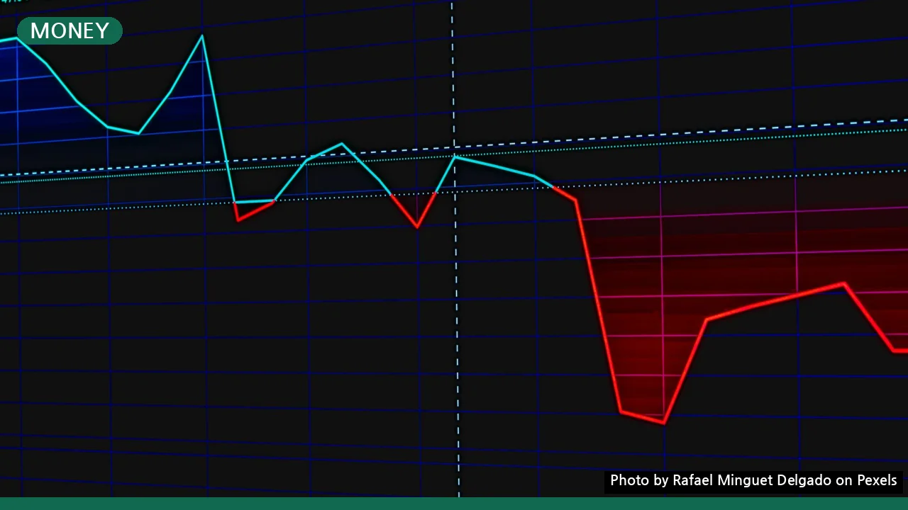
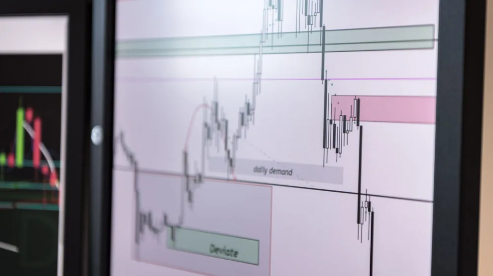

코스피 지수 투자, 놓치면 후회할 5가지 핵심 주의사항
사진: Rafael Minguet Delgado / Pexels (무료 이미지, 출처 표기)
코스피 지수 투자, 시작 전 꼭 알아야 할 기본 개념

코스피 지수 투자를 고민하고 계신가요? 단순히 지수 상승을 기대하며 투자했다가 예상치 못한 손실을 경험하는 경우가 많습니다. 이 글에서는 코스피 지수 투자를 시작하기 전에 반드시 확인해야 할 기본 개념부터, 위험을 최소화하고 수익을 올릴 수 있는 구체적인 전략까지 모두 정리해드립니다.
코스피 지수(KOSPI Index)는 한국거래소에 상장된 종목들의 시가총액을 종합적으로 반영하는 대한민국 대표 주가지수입니다. 개별 기업의 주식에 투자하는 것과 달리, 코스피 지수에 투자한다는 것은 한국 증시 전체의 흐름에 분산 투자하는 효과를 얻는 것을 의미합니다. 이는 개별 기업 분석의 부담을 줄이고 안정적인 시장 평균 수익을 추구할 수 있는 장점이 있습니다.
코스피 지수 추종 상품 선택 가이드: ETF vs. 인덱스 펀드
코스피 지수에 투자하는 가장 일반적인 방법은 상장지수펀드(ETF)나 인덱스 펀드와 같은 간접 투자 상품을 활용하는 것입니다. 두 상품 모두 코스피 지수를 추종하며 시장 전체의 움직임을 따라가지만, 몇 가지 중요한 차이점이 있습니다.
ETF(Exchange Traded Fund)는 증권 시장에 상장되어 주식처럼 실시간으로 거래되는 펀드입니다. 주식 매매와 동일하게 원하는 가격에 사고팔 수 있으며, 거래 비용이 상대적으로 낮은 편입니다. 반면 인덱스 펀드(Index Fund)는 일반 펀드처럼 설정과 환매가 이루어지며, 주로 장기 투자를 목적으로 합니다. 일반적으로 ETF보다 수수료가 높을 수 있지만, 자동 재투자가 용이한 장점도 있습니다.
2026년 11월 기준, 각 상품의 수수료율과 최소 투자 금액은 금융기관 및 상품 종류에 따라 크게 다르므로, 투자 전 반드시 상세 정보를 확인하고 비교해 보시길 권장합니다.
코스피 지수 투자의 핵심 위험과 관리 전략
코스피 지수 투자는 개별 종목 투자보다 위험이 낮지만, 분명한 위험 요소가 존재합니다. 가장 대표적인 것은 시장 위험(Systematic Risk)으로, 경기 침체, 금리 변동, 정치적 이슈, 글로벌 경제 상황 변화 등 거시 경제 요인으로 인해 시장 전체가 하락하는 경우 지수 역시 동반 하락할 수 있습니다.
이러한 위험을 관리하기 위해서는 몇 가지 전략이 필요합니다.
- 장기적인 관점 유지: 단기적인 시장 변동에 일희일비하지 않고, 장기적인 관점에서 꾸준히 투자하는 것이 중요합니다. 역사적으로 주식 시장은 장기적으로 우상향하는 경향을 보여왔습니다.
- 정액 적립식 투자(Dollar-Cost Averaging): 매월 또는 정기적으로 일정한 금액을 투자하여 시장의 고점과 저점을 예측하려 하기보다, 평균 매수 단가를 낮추는 효과를 기대할 수 있습니다.
- 자산 배분(Asset Allocation): 주식뿐만 아니라 채권, 부동산, 현금 등 다양한 자산에 분산 투자하여 전체 포트폴리오의 위험을 줄이는 전략입니다.
시장 변동성에 대비하는 현명한 투자 원칙
주식 시장은 예측 불가능한 변동성을 동반합니다. 특히 코스피 지수는 국내외 다양한 요인에 민감하게 반응할 수 있습니다. 이러한 변동성에 현명하게 대처하기 위해서는 다음 원칙들을 기억해야 합니다.
- 감정적인 결정 피하기: 시장이 하락할 때 공포에 질려 매도하거나, 급등할 때 뒤늦게 추격 매수하는 것은 손실을 키우는 지름길입니다. 원칙을 세우고 꾸준히 지키는 것이 중요합니다.
- 정기적인 포트폴리오 점검 및 리밸런싱: 최소 6개월에서 1년에 한 번은 자신의 투자 목표와 포트폴리오 구성이 여전히 일치하는지 점검해야 합니다. 자산 비중이 목표에서 벗어났다면, 원래의 비율로 되돌리는 리밸런싱 작업을 고려합니다.
- 충분한 학습과 이해: 자신이 투자하는 상품과 시장에 대해 충분히 이해하는 것이 중요합니다. 무턱대고 투자하기보다, 관련 서적이나 금융 교육 콘텐츠를 통해 지식을 쌓는 것이 현명한 투자로 이어집니다.
초보 투자자가 흔히 저지르는 실수와 피하는 방법
코스피 지수 투자에서 초보 투자자들이 흔히 저지르는 실수들을 파악하고 미리 대비한다면 성공적인 투자의 가능성을 높일 수 있습니다.
- 과거 수익률에만 집중: 과거의 높은 수익률이 미래를 보장하지 않습니다. 특정 기간의 높은 수익률보다는 장기적인 운용 전략과 안정성을 고려해야 합니다.
- 수수료 및 보수 간과: ETF나 인덱스 펀드의 운용 보수와 거래 수수료는 장기적으로 수익률에 큰 영향을 미칩니다. 눈에 잘 띄지 않지만, 꾸준히 발생하는 비용이므로 반드시 확인하고 비교해야 합니다.
- 무리한 레버리지 투자: 지수 관련 레버리지 상품(예: 코스피200 선물·옵션, 레버리지 ETF)은 시장 상승 시 높은 수익을 안겨줄 수 있지만, 하락 시에는 그만큼 큰 손실을 초래할 수 있습니다. 특히 초보 투자자에게는 위험도가 매우 높으므로 신중한 접근이 필요합니다.
- 묻지마 투자: 주변인의 추천이나 검증되지 않은 정보에만 의존하여 투자하는 것은 위험합니다. 반드시 스스로 정보를 찾아보고, 본인의 투자 성향과 목표에 맞는 상품을 선택해야 합니다.
코스피 지수 투자는 장기적인 관점에서 한국 경제 성장의 열매를 함께 나눌 수 있는 매력적인 방법입니다. 하지만 어떤 투자든 충분한 이해와 신중한 접근이 필수적입니다. 위에서 언급된 주의사항들을 명심하고 현명한 투자 결정을 내리시길 바랍니다. 정확한 상품 정보 및 투자 관련 세부 사항은 금융투자협회, 한국거래소 또는 각 증권사의 공식 홈페이지를 통해 다시 확인하시길 권장합니다.
🔗 이 글도 함께 보면 좋아요: DSR 때문에 대출 막힐까 걱정? 놓치면 후회할 핵심 유의사항 3가지